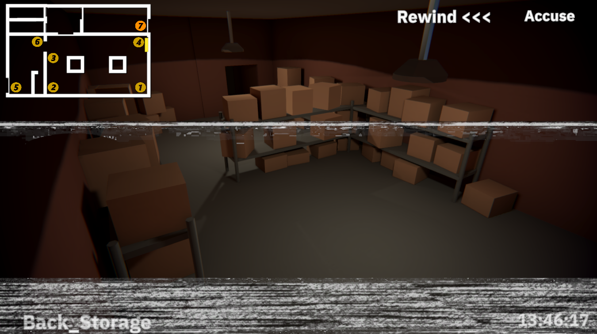
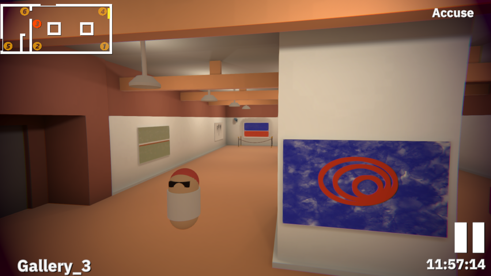
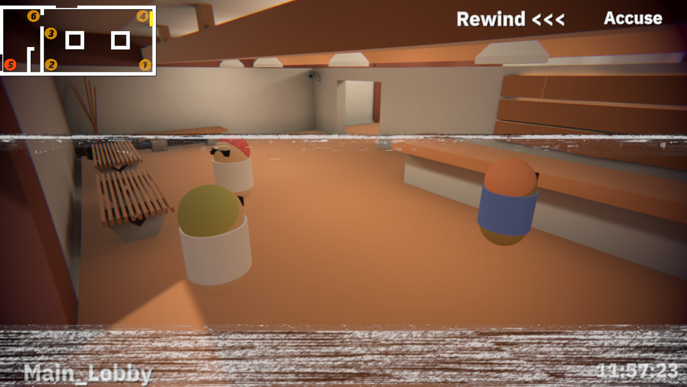

Just in time security

Description
You play a security guard trying to decipher what is occurring in surveillance footage. Use the rewind button and multiple camera angles to figure out what happens and prove who is innocent and who is guilty.
Screenshots & Images



Play The Game
Feedback & Comments
"Nice little game, really enjoyed the scenario & the theme fits perfectly :) Great job for this game jam!" - HadiLePanda
"This is a unique and fun game! With a bit of polish and bug fixing this could definitely be expanded on into a full release. The most immediate thing I think needs fixing is when the camera I'm looking at turns off I wasn't able to switch because the static drew over the UI. I'm not sure if this was intended behaviour but it meant I had to quit the game and restart each time it happened. I hope you can keep working on this though! It has a lot of potential!" - Maroon Seal
"hmmm, I haven't seen that one before. I will look into that. After getting so much positive feedback I might make some sort of a full release for this. Thanks for the suggestion." - IllogicalDesigns (Developer)
"Funny game! Anyone who plays this must see both levels! 😂 Although, I barely used rewind and just restarted the game when I couldn't find the perpetrator." - Polysplit Games
"I mean I guess that does work, the rewind should be used to see multiple angles and track and trace where people go and are. I think a penalty or something might be in order to fix the fact that you can just shoot people until you solve it." - IllogicalDesigns (Developer)
"The concept is so cool ! Each level has its own surprise ! I often choose innocent guys haha. Graphics are kind of nice, the sound effects and the music are helpful to get in the atmosphere. I think you could add a progressive bar where we can select time, rewind and speed up the video. I really enjoyed your game, Nice job !" - Lotyss
"I really like that idea of a progress bar, that could be really nice to scrub through like a video. Alas I think a rewrite of the rewind logic would be in order. But if I expand it I will work to implement that." - IllogicalDesigns (Developer)
"It was YOU!" - Gus
"Shhhh, that's a secret" - IllogicalDesigns (Developer)
"Neat little game, actually got me invested in finding the culprits, well executed apart from a few bugs, getting stuck if the tape reaches the end. Also had a crash :P" - BjornStahl
"Yeah the rewind is held together with duct tape and time. Thanks for playing though." - IllogicalDesigns (Developer)
"Ah, very cool and slick! I didn’t just want to shoot the innocent guy, so that was a very good touch to make me go back and try again to see what I missed the first time ’round." - Rauno Villberg
"Wow that was so sick. I loved playing this, as others have said you totally feel like a real security guard! I also love how you make it challenging, you can't just stare at the painting the whole time and figure it out. I would love to see more levels added, and I think the only suggestion I have is to change \"out of bounds\" to something like \"you're too late\" so it's more obvious that the painting has been stolen already and you can't watch any further. I wasn't sure what it meant when that came up and I thought it was just a camera being disabled or something. Otherwise, though, this was such a fun game to play. Great job!" - FelineFriendly
"Good idea with the language switch. End of tape might work. I am glad you enjoyed it." - IllogicalDesigns (Developer)
"Really fun game! Had a lot of fun playing it" - Spheya
"Really cool game and nice screen effects !" - Biennes
"Nice game! I love how it makes me feel like i am a real security guard!!!" - Clive Dev
"I am glad it gave you that feeling, it means its working." - IllogicalDesigns (Developer)
"Awesome showcase on cctv footage, my team actually came up with an idea like this but decided on another direction, its funny to see how many people had similar ideas! Great work! My only thing about it the art/models could've had some better touches to it, like people with animators, but the capsules definitely work the way you used them! and the Audio, though it sounded great, didn't really seem to fit in too much." - Kaideu
"I unfortunately lack a team to work with and haven't much animation experience." - IllogicalDesigns (Developer)
"Cool spin on rewind. I had a similar idea while brainstorming but went with a different idea lol. I like relaxed but still focused gameplay. Feel free to rate my game when you get a chance too :)" - Colin Watterson
"I think a lot of people came up with a VHS tape game mechanic. Also I tried your game, I thought it was really impressive." - IllogicalDesigns (Developer)
"The camera angles and video playback features really make this convincing - still haven't caught the culprit yet" - gaming chef
"The culprit is always conviently only visible from select camera angles at certain times. So one has to scrub through the footage a few times to really get a clear idea of the culprits or culprit." - IllogicalDesigns (Developer)
"The game idea is great and I like how you have to rewind the video tape to see who did it from different angles. Great job and good luck!" - Dostee Hemin
"Thanks, I think I might try and prototype something similar, just with a different way of interating with the world. I feel the player lacks agency right now." - IllogicalDesigns (Developer)